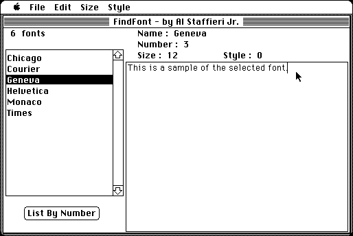

Download
FindFont.zip (45K) FindFont 1.03 repackaged into a zipped hfs disk image and checksum file. The disk image can be mounted with Mini vMac.
FindFont.sit (41K) FindFont 1.03 in the original format.
copyright: Al Staffieri Jr.
mod date: Oct 22, 1994
license: shareware
from url :
Al's Older Macintosh Software
Can quickly display an editable text sample in any font, size, and style you choose. For “System 4.1 or better”.

If you find these downloads useful, please consider helping the Gryphel Project, which hosts them.
Here are the md5 checksums for the downloads, signed with Gryphel Key 5:
--------- GRY SIGNED TEXT --------- 6ceec2d0d606bc1e5455503c4e8d12d1 FindFont.zip 7ee229b706099acc6574ca191f1bb24e FindFont.sit ------- BEGIN GRY SIGNATURE ------- Gry/4Xa8CFcUzxdN/CdQptLnb4ll+6u5mVI/YtYn5M3xbpMsCM2z3R4d2dtRebnj IosBnxbm5WlSU/4+3HA+YKv9Uplu5C207LMi1WusL+PQ8UmWr5Oi4usbhXdTqfy4 mdbQ3DMXW7EMAUq/Yp7/TkqjswPXdfsFzkbEAT5b9IuwouqyEE8hh8rrudTL0uMf -------- END GRY SIGNATURE --------